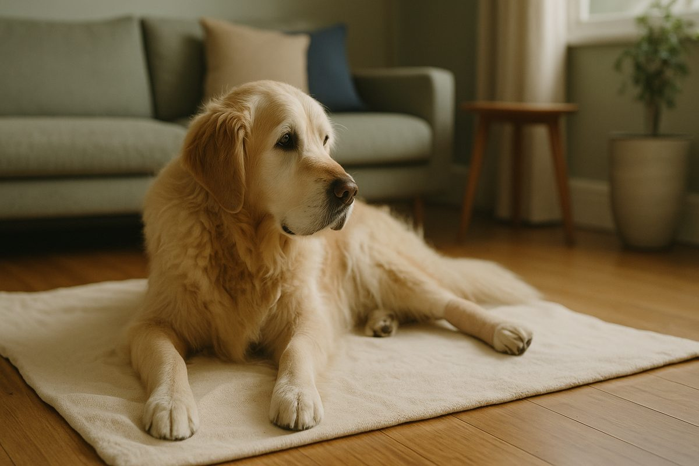
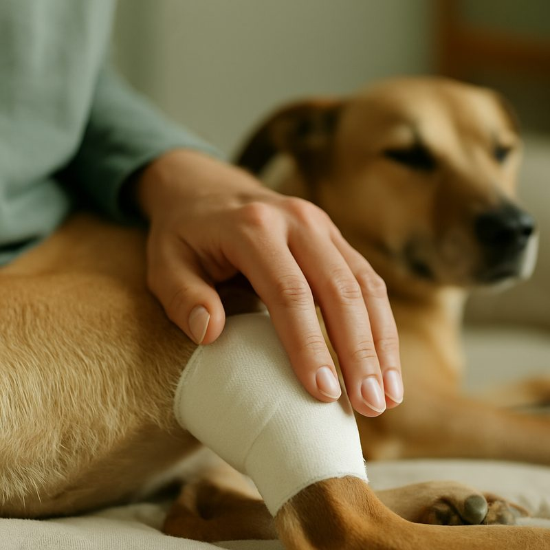
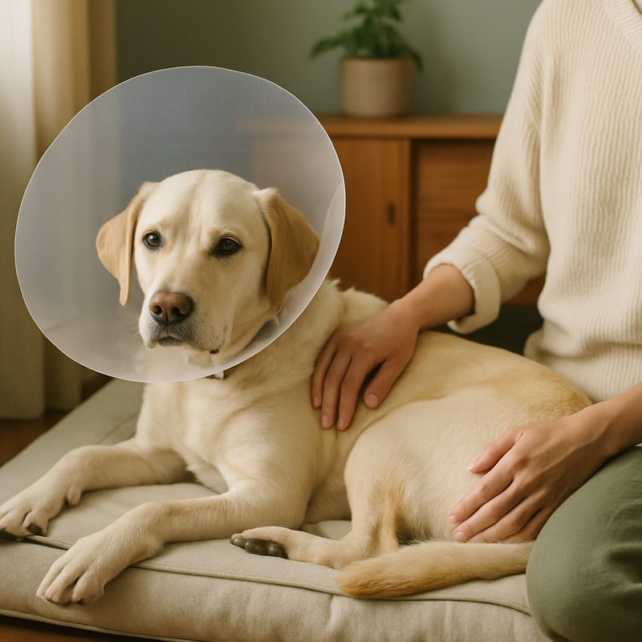

TPLO surgery for dogs, cost, recovery and what to expect

TPLO (Tibial Plateau Levelling Osteotomy) is the gold-standard surgery for cruciate ligament rupture in dogs over 15 kilograms. It changes the geometry of the knee so the cruciate isn't needed to keep the joint stable. Cost in Australia is $4,500 to $7,500 per knee. Recovery is around 4 to 6 months to full activity. Below: how the procedure works, week-by-week recovery, the alternatives and when each is appropriate, and the insurance reality.
What TPLO actually does
The cranial cruciate ligament holds the femur and tibia together at the right angles. When it ruptures, the femur slides forward on the tibia every time the dog bears weight, which is painful and rapidly damages the meniscus and surrounding joint surfaces.
TPLO works by making a curved cut through the top of the tibia, rotating the bone, and securing it with a metal plate. This levels the angle of the joint so it stays stable under weight without needing the cruciate. The dog walks on the knee within 24 to 48 hours of surgery.
The bone heals over 8 weeks. The plate stays in for life unless it causes problems (rare). Most dogs return to swimming, walking and even agility within 6 months at near-pre-injury function.
TPLO vs the cheaper alternatives
- Extracapsular suture (lateral suture). A heavy nylon suture replaces the cruciate function. Cheap ($1,500 to $2,500), works in dogs under 10 kg. In larger dogs the suture stretches and fails within 6 to 12 months in around 30 to 40 per cent of cases.
- Tightrope technique. Similar concept, modern materials, slightly better durability than lateral suture. Still inferior to TPLO in dogs over 15 kg.
- TTA (Tibial Tuberosity Advancement). Similar geometry rationale to TPLO, different bone cut. Comparable outcomes. Cost is similar. Some surgeons prefer one or the other based on their training.
- TPLO. Most evidence behind it, most surgeons trained in it. The default for medium and large dogs.
- Conservative management (rest, anti-inflammatories, weight loss). Works in some small dogs and in elderly dogs where surgery isn't appropriate. Doesn't restore function in young active dogs.

What TPLO costs in Australia
Specialist orthopaedic surgeons trend higher but offer marginally better outcomes for complex cases (very large dogs, revisions, both knees at once). For a routine TPLO in a 25 kg Labrador, a competent general-practice surgeon is fine. The vet payment plans guide covers financing.
The week-by-week recovery
- Days 1 to 14. Strict rest, lead-only toilet breaks. Pain medication (gabapentin, NSAIDs). Suture check at 10 to 14 days. Most dogs are weight-bearing in the first week.
- Weeks 2 to 4. 5 to 10 minute lead walks, twice a day. No off-lead, no stairs, no jumping. Most dogs are noticeably less lame by week 3.
- Weeks 4 to 8. Lead walks build to 20 to 30 minutes. Hydrotherapy if your vet recommends it. Recheck X-rays at week 8.
- Weeks 8 to 16. Off-lead in safe areas reintroduced, slowly. Stairs allowed. No agility or rough play yet.
- Months 4 to 6. Gradual return to normal activity. By month 6 most dogs are running and swimming as before.
Tell people when not to rush this: the single most common cause of TPLO complications is owners who let the dog off lead too early. Dogs feel fine before the bone is healed. The 8-week X-ray exists for that reason.
The other knee, and how to protect it
About 40 to 50 per cent of dogs that rupture one cruciate will rupture the other within 1 to 2 years. The biggest controllable risk factor is body weight. A lean dog after TPLO is half as likely to do the second knee. Bridge to second-knee prevention:
- Get to ideal body condition score (4 to 5 out of 9) and stay there.
- Avoid abrupt high-impact activity (twist-and-pivot fetching, ball-throwing on slippery floors).
- Maintain hind-limb strength with regular controlled walks and hill work once cleared.
- Consider joint supplements (omega-3s, green-lipped mussel) from age 3 in predisposed breeds.

Straight answers
Can my dog walk again after TPLO?
Yes. Most dogs are weight-bearing within 1 to 2 weeks (cautiously) and back to normal activity by 4 to 6 months. Long-term function is around 90 to 95 per cent of pre-injury, considerably better than the cheaper alternatives.
Is TPLO better than the cheaper alternatives?
For dogs over 15 kg, yes. Extracapsular repair and the lateral suture technique work in small dogs but the suture commonly fails in larger dogs. TPLO changes the bone geometry so the cruciate isn't needed, more durable.
How much does TPLO cost in Australia?
$4,500 to $7,500 per knee, including pre-op bloods, anaesthetic, surgery, plates, post-op meds and rechecks. Specialist surgeons trend higher, regional general-practice surgeons lower. Pet insurance taken before symptoms typically covers most.
Will the other knee go too?
About 40 to 50 per cent of dogs that rupture one cruciate will rupture the other within 1 to 2 years. Maintaining lean body weight after the first surgery is the single biggest variable in whether the second happens.
How long is the recovery?
Strict rest for the first 2 weeks (toilet only, on lead). Controlled lead walks weeks 2 to 8. Gradual return to normal activity weeks 8 to 16. Off-lead and stairs back at 4 months. Full bone healing at 6 months.
Is pet insurance worth it for this?
If taken out before the cruciate goes, yes, in most cases. Cruciate is one of the highest-cost claims pets make. Insurance taken after symptoms appear won't cover the surgery (pre-existing condition exclusion).
TPLO is one of those surgeries where the cost makes you wince and the outcome makes you forget. For active dogs over 15 kg with a ruptured cruciate, it is the right call almost every time. The cheaper alternatives work in smaller dogs and tend to disappoint in larger ones. Related: emergency vet Sydney, payment plans, find a vet. Information here is general and isn't a substitute for veterinary advice.